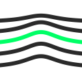

DIGITAL GRAVITY ContatoOito perguntas, dois minutos. Responda honestamente — o valor do diagnóstico depende disso. No fim, você vê onde seu sistema está entre a demo e a produção, e onde estão as lacunas.
Mandamos uma leitura do seu diagnóstico e os próximos passos.